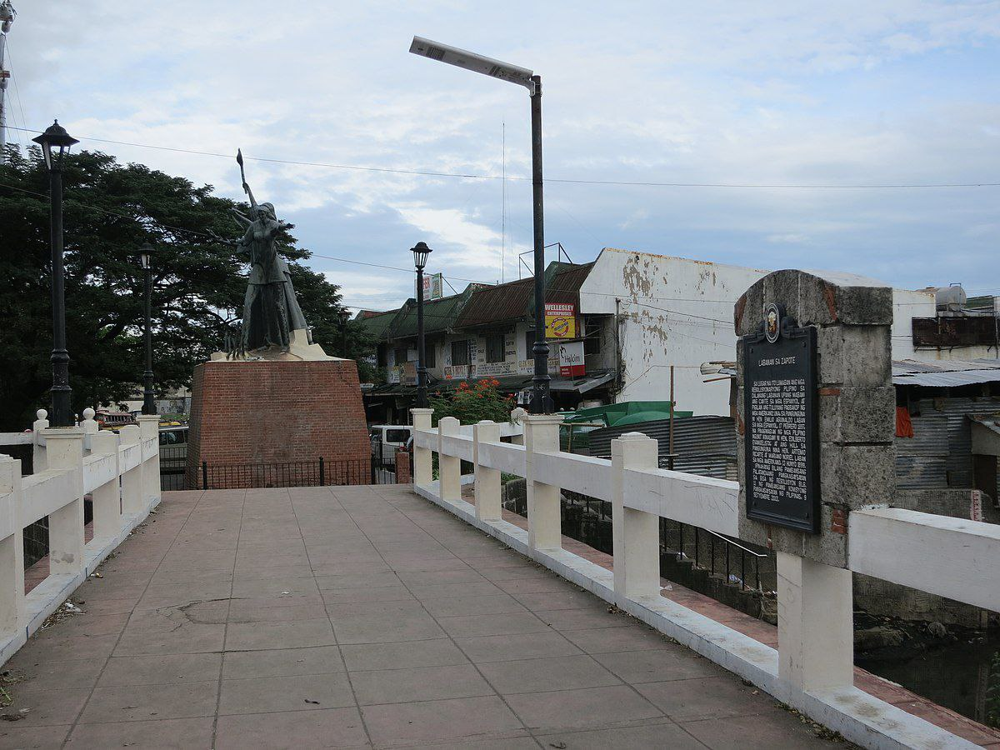
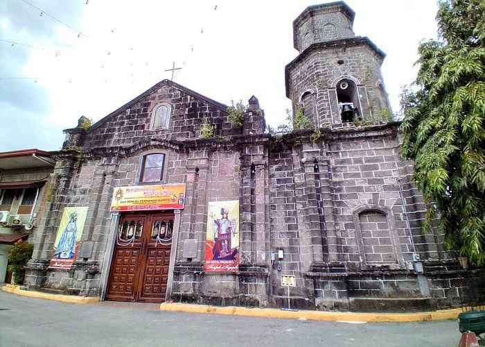

Dear Readers,
This is a all about the wonders of my three beautiful and lovely hometowns.
Bacoor is really where I growed up, where I live since birth, where I turned 1yr old. This is the 1st hometown of mine.
If I have a lot of money, I'll travel this wonderful sights and historical places in Bacoor:
Tulay ng Zapote:
St. Michael The Archangel Parish Church:
That's all for now, let's move on to my 2nd Hometown which is Bacolod, La Carlota City. I wanted to put their famous celebration in that province, the famous Masskara Festival
:
This annual festival is a celebration of determination to overcome many difficulties and adversities, the mask represents the spirits of Bacolod City and their commitment on facing their challenges.
Now, to my 3rd hometown, my Mother's Hometown, I've liked to share the famous Moriones Festival
:
This festival is a lenten festival held annually in Holy Week
on the island of Marinduque. The Moriones
which came from the word morion which means mask
. This is a celebration of religious devotion and cultural tradition in Marinduque. The mask characteristics/feature it have a sharp eyes and a beard and villainous scowl. I didn't add the gore part but that's for another time.
Sincerely,
Emerald Bendol